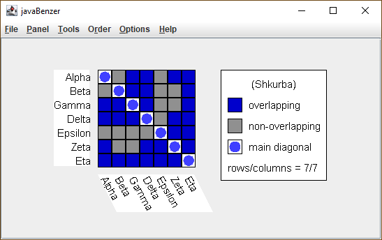
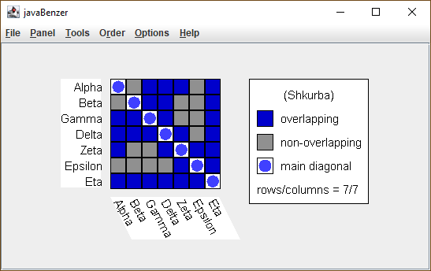
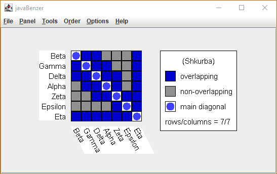
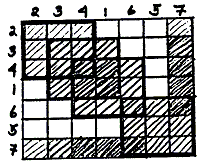
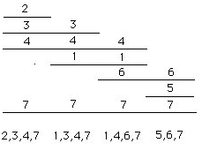

However, let us reconsider the original problem (Table I) in a different way. In 1965, Shkurba developed a matrix manipulation to a canonical form -which allowed an analysis of Gershenzon's "hypothesis that supplementary nutrition of Drosophila larvae with preparations of DNA caused mutations which affect whole sections of the chromosome." We can easily see that this biological problem is exactly equivalent to the "Benzer" problem. Therefore, let us consider Shkurba's solution because we contend that by considering the 3 kinds (ad hoc, algorithmic, and heuristic) of solutions to topological mapping of genes, we will offer students multiple ways of understanding problem solving. The first step in Shkurba's solution is to convert the matrix as displayed in Table I to the fully symmetrical form and to use blocked out cells in the matrix rather than zeroes and ones because it is easier to visualize when one has reached an appropriate canonical form of the matrix which he refers to as possessing the "basic property".
At this point, we will alter from our previous process by presenting Shkurba's answer first and then
returning to an analysis of the process whereby he arrived at his conclusion. We will use the same
example as before. First, table I is easily completed to make a fully symmetrical matrix as seen in
Figure 11.
|  |
Second, try to gather all the black squares about the diagonal in order (1) to minimize the moment
of the matrix and (2) to make sure that no squares are unattached to other squares by less than a
full side. Furthermore, Shkurba says that (3) all arrowheads should be pointing toward the same
corner of the matrix. These three conditions, if they can be satisfied, represent the conditions for
constructing an interval graph of the deletion mutants. Thus, if we rearrange rows and columns in
Figure 11, we see that the conditions are approached if we interchange the order of 5 and 6
mutants (Figure 12).
|  |
Only one additional third step is required in this case to draw all the black squares together and
satisfy the conditions for the "basic property"; this is simply achieved by inserting mutant 1 between
mutants 4 and 6 in Figure 12 (see Figure 13).
|  |
We can easily see that the diagonal can be represented as four overlapping blocks (Figure 14).
|  |
|
Now it is a trivial problem to assign a mutant to an interval corresponding to the block (and only
that block or blocks) to which it belongs (see Figure 15).

Figure 15. The interval graph determined by the Shkurba (1965) method on the
same data employed throughout this paper. Each block in Figure 14 is given
one interval on a line and the mutants are represented by lines extending
over each interval (block) of which they are a member.
Figure 15 is isomorphic with Figure 10. The overlapping blocks in Figures 13 and 14 correspond exactly to "maximal cliques." Shkurba is able to present an algorithm employing the theory of partially ordered sets; however, we want to use his "basic form" to illustrate the power of heuristics. While heuristics are thought to be weaker methods than algorithms, for simple problems such as occur in undergraduate textbooks, our students usually preferred the Shkurba method over the other two because by a little trial and error they could quickly convert a data matrix into the "basic form." Students have quite powerful pattern recognition experience and they find it easy to check their progress towards a "basic form" solution to such problems. However, if the matrix is extremely large, most students prefer to use the graph theoretic algorithm.